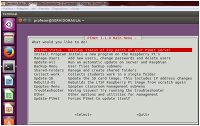
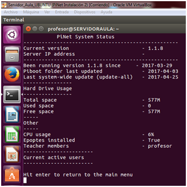
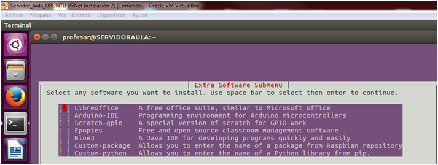
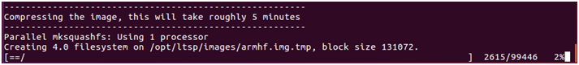
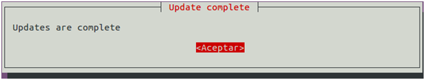
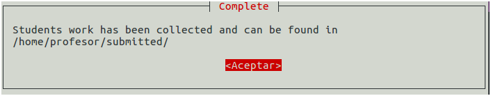
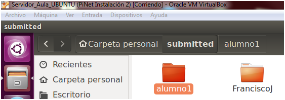
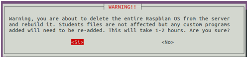
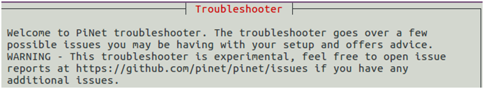
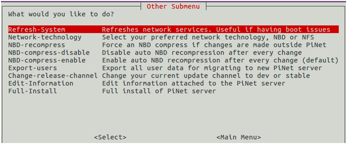

7. Otras Opciones del Menú
Comenzamos la última de las secciones en las que se divide el presente curso, esperamos quehasta ahora vaya todo bien y os este gustando el proyecto.
En este módulo, pretendemos explicar aquellas partes del Menú de configuración de PiNet que apenas usaremos o quizá sí, pero que no tienen un uso tan específico como las anteriores.
Arrancamos PiNet y vamos a detallar cada uno de las opciones del menú.

*/ System - Status:
Nos ofrece de un rápido vistazo información sobre el esta del sistema:
Número de la versión.
Ip del servidor
Fecha de instalación de la versión.
Fecha de la última actualización de PiBoot (sistema para las SD)
Fecha de la última actualización de todo el Sistema PiNet + Piboot
Uso del Disco Duro: Estos valores dependerán si hemos expandido o no las SD tras la instalación de Piboot.
Miembros del grupo Teachers
Usuarios activos en el momento.

Pulsamos Enter y Volvemos al Menú principal.
*/ Install - Program:
Ya hemos hablado de él en el módulo anterior e igual que instalamos epoptes, podemos instalar el resto de programas de la lista.

Brevemente:
- Libreoffice: El equivalente a Microsoft Office, ya incluído en las Raspberrys, pero a lo mejor no en Ubuntu (lo normal es que sí)
- Arduino – IDE: Este programa se llama IDE, que significa "Integrated Development Environment" ("Entorno de Desarrollo Integrado"). Este IDE estará instalado en nuestro PC, es un entorno muy sencillo de usar y en él escribiremos el programa que queramos que el Arduino ejecute. Una vez escrito, lo cargaremos a través del USB y Arduino comenzará a trabajar de forma autónoma. Podemos saber más sobre él en el siguiente enlace.
https://openwebinars.net/blog/tutorial-arduino-ide-arduino/
- Scratch – Gpio: La adaptación de Scratch para el manejo del puerto gpio de nuestras Raspberrys. Aquí podeis documentaros más sobre su uso.
http://pitando.net/2015/09/10/scratchgpio-control-de-prototipos-con-scratch/
- Epoptes: Instalado en el módulo anterior.
- BlueJ: Adaptación del lenguaje Java para entornos educativos. Se basa en la programación orientada a objetos.
https://es.wikipedia.org/wiki/BlueJ
- Custom- package y Custom – Python: Para ambos sistemas, permite la creación de una carpeta compartida que actuará como repositorio de nuestro sistema.
*/ Manejo de Usuarios:
También explicado en módulos anteriores.
*/ Update - all:
Realiza una actualización de todo el sistema del Servidor y de Raspbian. Cuesta bastante tiempo y conviene realizarlo cada pocos meses, sobre todo porque nos actualiza el software de todos los equipos.
Como cada vez que cambiamos algo, nos comprimirá la imagen del sistema.
Cuando finalice nos aparecerá un mensaje como este:


Nota:
**** Si al iniciar las Raspberry, tuvieramos algún problema, conviene copiar de nuevo en la SD el contenido de la carpeta Piboot, puesto que esta actualización puede haber cambiado algo importante de Raspbian.
*/ Backup – menu:
Usa archivos que tuvieramos guardados para recuperar el sistema de un fallo o una especia de vuelta a un estado anterior. Aún está en fase Beta, por lo que conviene crear otro tipo de respaldo por si acaso.
*/ Shared – folders: (carpetas compartidas):
También estudiadas en módulos anteriores.
*/ Collect – Works:
Permite recopilar trabajos de nuestros alumnos al momento es una sola carpeta, con lo que facilita mucho la tarea de recuperar todas las tareas que queramos “recoger” de nuestros alumnos. Solamente debemos entrar y poner el nombre del usuario que va a "recoger" los trabajos, aceptaremos el mensaje de aviso y veremos en la carpeta del profesor, una carpeta por alumno con el contenido coleecionado.


*/ Update – SD:
Actualiza la imagen de Piboot para nuestras raspberrys, eso es necesario cuando se produzca un cambio en la IP del servidor o cuando queramos reinstalar los equipos de nuestros alumnos.
*/Rebuild – OS:
Reconstruye el servidor LTSP de Linux soporte de Pinet. No es una opción muy utilizada ya que supone casi el completo formateo de Raspbian del servidor. Los archivos de los alumnos no deberían de ser afectados, pero si alguno de los programas.

*/ Epoptes – menú:
Visto en tareas anteriores arranca el programa epoptes.
*/Troubleshooter:
Es una especie de solucionador de problemas, que mediante una serie de preguntas nos puede ayudar a resolver algún pequeño problema de configuración que tuvieramos, con todo, nos acaba mandando a la página oficial de Pinet.

*/ Other:
Otro tipo de configuraciones no accesibles desde el menú normal; las vemos:

Destacamos por su uso la primera, ya que es la que nos permite “refrescar” el sistema cuando hemos realizado algún cambio significativo en nuestra red.
El resto de opciones no es aconsejable cambiarlas para usuarios no avanzados.
*/ Update –Pinet:
Fuerza el sistema a una total actualización, es recomendable cuando el propio sistema nos avise de que se ha publicado una nueva versión y para solucionar algún fallo de configuración inicial.
Y hasta aquí el módulo con más teoría de todo el curso, os invitamos a realizar la evaluación de la Unidad que es muy sencilla.
*/ TODAS LAS IMÁGENES UTILIZADAS EN EL PRESENTE MÓDULO HAN SIDO ELABORADAS POR EL AUTOR DEL CURSO.

Monta tu aula de informática con Raspberry Pi por Fernando Gasca Andreu bajo licencia Creative Commons Reconocimiento-NoComercial-CompartirIgual 4.0 Internacional License.